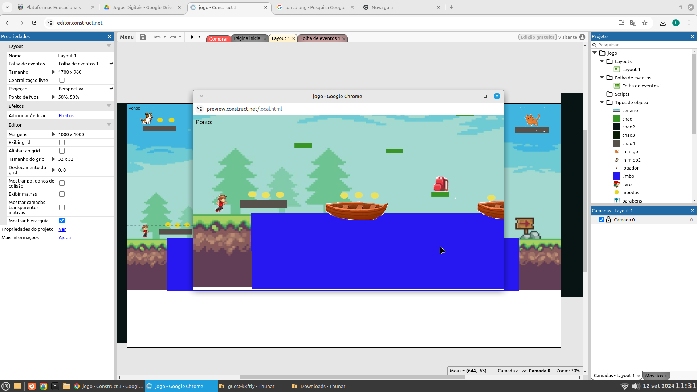

.png)
Formação Acadêmica: Lingua Portuguesa e artes
Do Que trabalhou: Secretaria, Motorista de Van cooperativa de serviços gerais agente de combate a dengue e domestica.
Atualmente dá aula de Lingua Portuguesa no 3°TDS


Clique na imagem acima para jogar um produzido especialmente para a professora
Sonia !
Querida Professora Sonia
Adoro que você é super animada com os alunos, e super educada, obrigada por ser assim.
Ass: Louise Victoria Ricas Duarte. 2°TDS
Quero te agradecer e parabenizar pelos seus ensinamentos.
“O verdadeiro professor inspira os alunos a aprender através do seu jeito de ensinar”
Ass: Thainá Soares.
Turma: 2º TDS.
Sonia : Profª Sonia: Por sua causa sei que serei uma pessoa bem-sucedida. Obrigada, professora!
Ass: Lucas Ryan 2 TDS
Sonia Pereira : Uma professora como você faz da escola uma fase linda onde tudo que se aprende tem um significado especial. ❤
ASS: Luiz Henrique Segatto - 4º INFO
 Clique na imagem acima para dar sua opinião sobre nosso projeto!
Clique na imagem acima para dar sua opinião sobre nosso projeto!